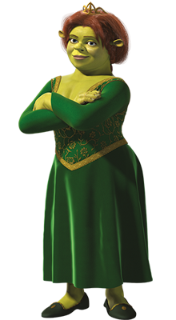

- Shrek: És el protagonista principal de la pel·lícula. Abans de conèixer a Fiona, li agradava viure en soledat i brutícia en el seu pantà.
- Fiona: Va ser condemnada a viure gran part de la seva vida en el més alt d'un castell custodiat per una dragona. Amb la maledicció de tenir un aspecte de dia i un altre completament diferent de nit. Tot canvi quan va ser rescatada per Shrek. 
- Ase: Ase va aconseguir escapar després de ser gairebé venut als guàrdies de Lord Farquaad. Durant la seva escapada va conèixer a Shrek i donis de llavors no s'ha apartat d'ell. Han arribat a ser millors amics.
- Lord Farquaad: És un home cruel i cobejós, va bandejar a totes les criatures màgiques i el seu principal objectiu era convertir-se en rei de Duloc. Llastima que el seu final destí no va acabar feliç per a ell.
- Home de Gingebre: També anomenat Gengi, és una galeta enfornada Jero el pastisser. Després de ser torturat per Lord Farquaad es va aliar amb Shrek per a posar fi al seu regnat.